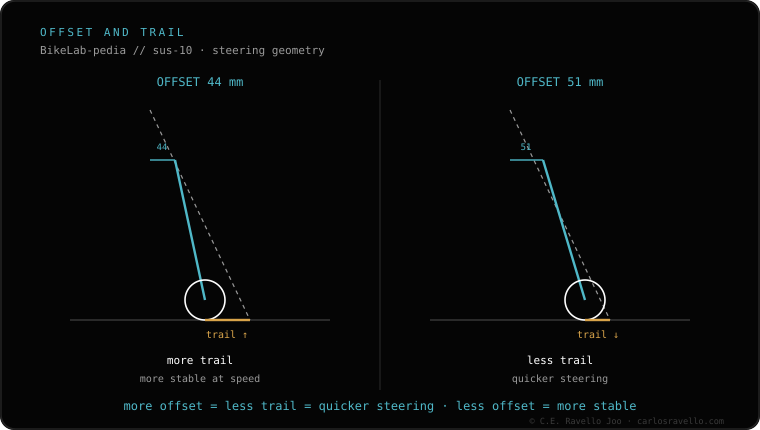

Offset (rake) is the horizontal distance of the axle from the steering axis. Less offset (44 mm) = more trail = more stable at speed and on steep terrain; more offset (51 mm) = less trail = more agile, quicker steering. The fork length and the travel don't change: only the trail does. In 29-inch, 44 is the modern figure and 51 the older or XC one. It's a spec worth checking when choosing what fork fits your bike, within the suspension & dropper cluster.
It's not more travel or a longer fork: it's how the steering feels. That's why 44 and 51 live side by side in forks that are otherwise identical.
Offset, also called rake, is the horizontal distance between the wheel axle and the extended steering axis. Together with the head angle it defines trail: the more trail, the more the wheel tends to self-centre, which gives stability; the less trail, the quicker and lighter the bars respond.
44 mm (less offset). More trail. The steering feels more planted and stable at speed and on descents or steep terrain. It's the modern figure in 29.
51 mm (more offset). Less trail. The steering feels more agile and quick to tip into a corner. It's the older or typical XC figure in 29.

Offset is one of the specs you check when deciding what fork fits your bike: a fork can fit perfectly and still change the steering feel if the offset isn't the same as stock.
Send us your bike model and how you ride it (more descending or more XC) and we'll tell you the offset it came with from the factory. Message us on WhatsApp
The horizontal distance of the axle from the steering axis (rake). Together with the head angle it defines trail.
44 gives more trail (more stable); 51 gives less trail (more agile). The length and travel don't change.
No. Offset only changes the trail. In 29, 44 is the modern figure and 51 the older or XC one.
© 2026 BikeLab Studio. Content under CC BY 4.0: you may copy, translate and publish it, even for commercial purposes. Citation is mandatory. Without attribution, the license terminates automatically (CC BY 4.0, §6.a) and the use becomes copyright infringement: we request the removal of the content and its deindexing. · Design and ownership: Carlos Ravello Joo